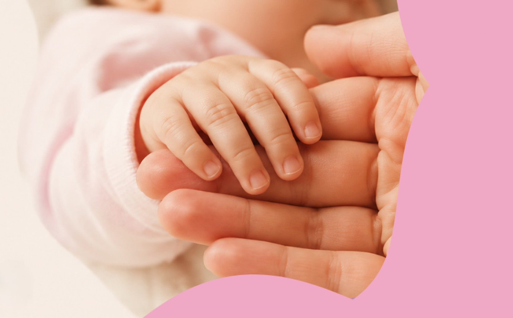

Sobre a
Conheça nossa história, missão e propósito.

Entidade beneficente de assistência social, sem fins lucrativos, que há 34 anos apoia a maternidade e o cuidado integral à primeira infância em Canoas.
Apoiar as mães e seus filhos que se encontram em situação de vulnerabilidade social no que tange ao desenvolvimento de suas vidas.
Ser uma instituição que consiga contribuir para a promoção da maternidade consciente e resgate familiar.
Respeito, Amor, Ética, Apartidarismo, Disponibilidade e Compromisso, Honestidade e Transparência.
Início da associação com a produção de enxovais para mães e bebês em situação de vulnerabilidade.
A ONG passa a ser reconhecida pela Prefeitura de Canoas e órgãos da assistência social.
Conquista da sede própria no bairro Niterói, ampliando os atendimentos às famílias.
Criação do Projeto WebMãe e início da oficina de produção de fraldas descartáveis.
Atendimento contínuo a mães, gestantes e crianças através do SCFV e ações sociais.
Nosso impacto
Sua doação faz toda diferença na vida de muitas famílias.
Doe seu tempo, amor e habilidades para transformar vidas.
Divulgue nossa causa e ajude a alcançar mais pessoas.